Wanna goSkate?
Welcome to goSkate, the app which features a map that shows you the locations of skate parks, skate spots, and skate shops. The app also features a S.K.A.T.E dice which you can use to challenge yourself with your own list of tricks, or a pre-set list based off different difficulties!
Swipe to view images below
 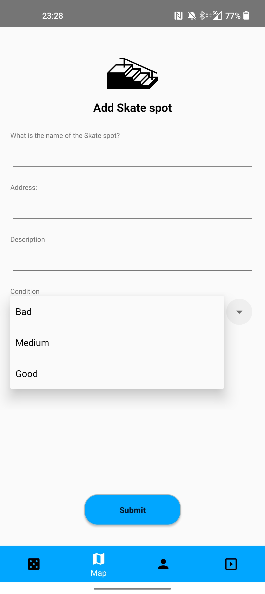
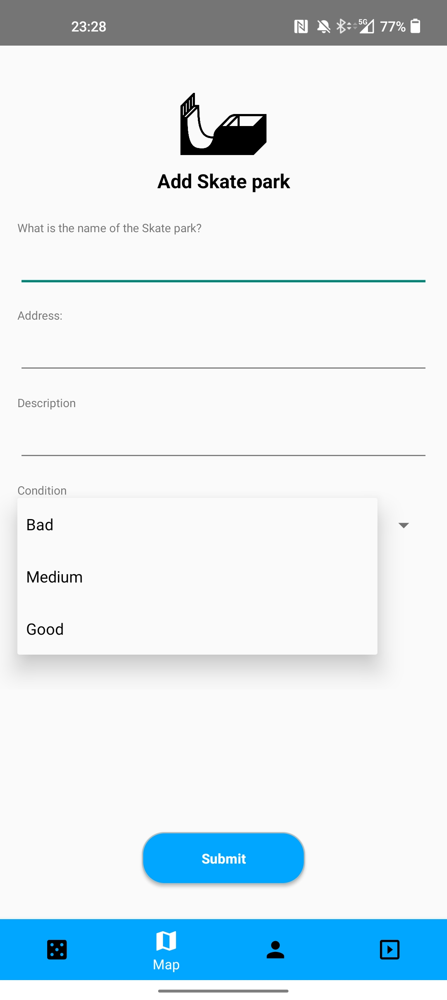
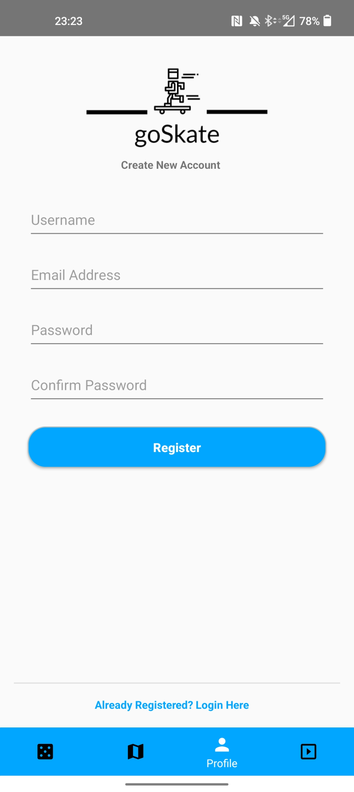
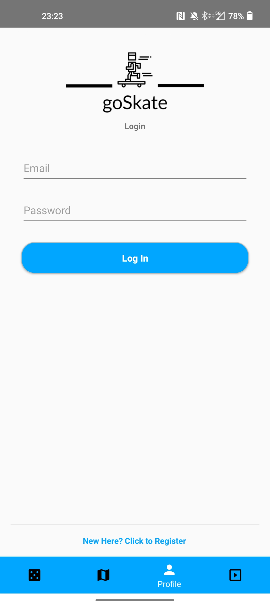
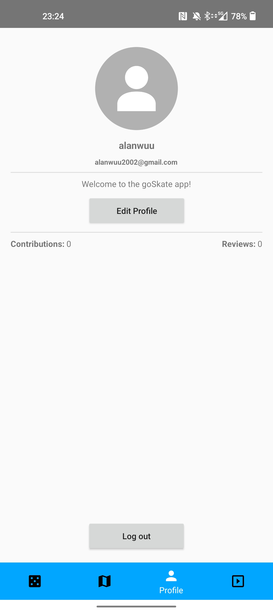
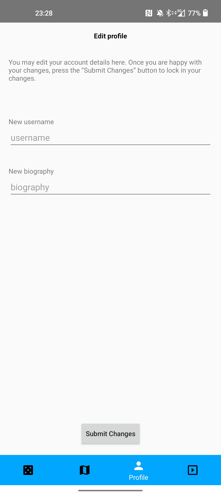
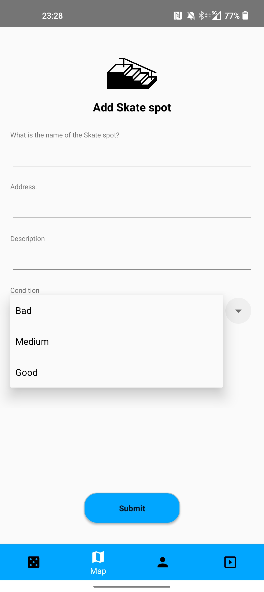
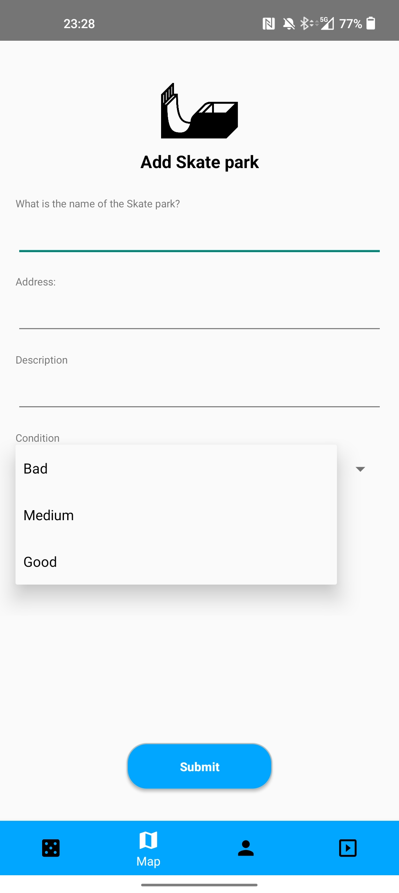
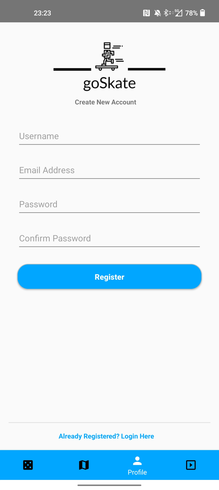
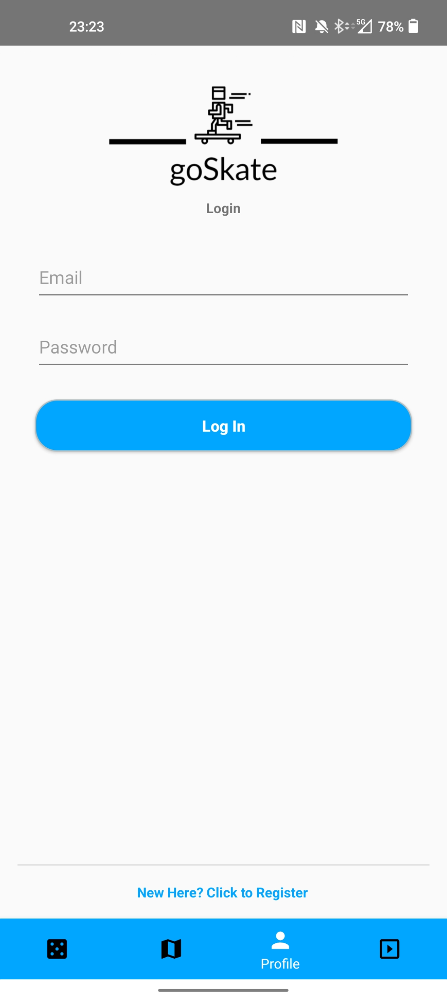
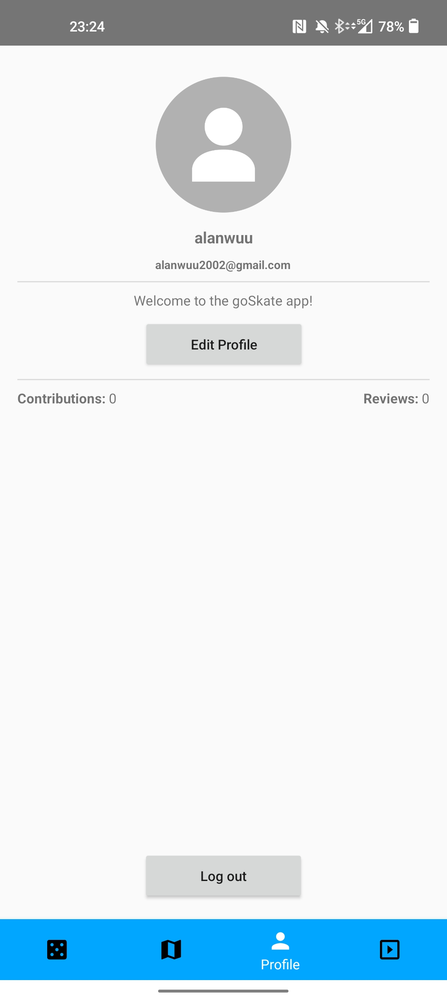
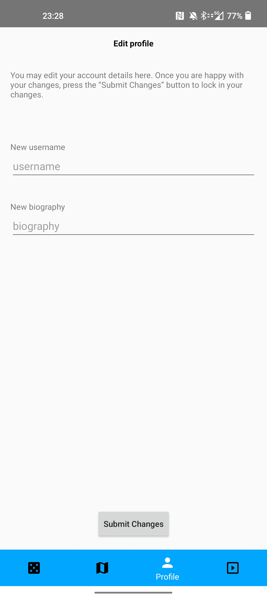
The goSkate map gets filled by locations submitted by users, so if you don’t see your local skate location, you can add it to the add in a few taps and it should be shown on the skate maps within 24 hours!
The goal of the goSkate app is to make it easy to explore new spots where you can skate, as well as new skate shops which you can visit and support! Share your spots with other users and expand your potential.
This website aims to show you how to use the app, and how to make the most of it.